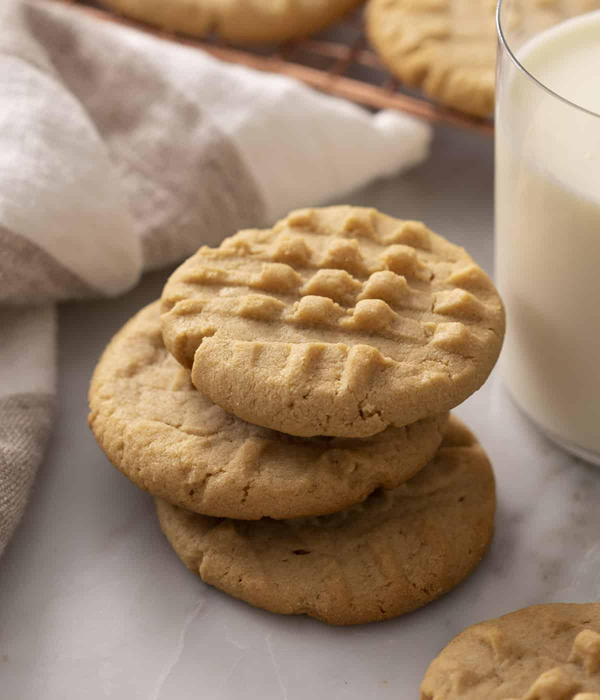

You'll love these ULTRA-easy peanut butter cookies. They're full of peanut butter flavor and
have the perfect balance of salty and sweet with a wonderfully soft, melt in your mouth texture.
This cookie is a classic for a reason!
HOW TO MAKE PEANUT BUTTER COOKIES
INGREDIENTS
- 1 1/2 cup all-purpose flour
- 1/2 cup butte
- 1 cup peanut butter
- 1/2 cup brown sugar
- 1/2 cup sugar
- 1 tsp vanilla extract
- 1 egg
- 3/4 tsp baking powder
INSTRUCTIONS
- Sift flour and baking powder together then whisk to combine.
- Cream butter and sugars in a stand mixer fitted with a paddle attachment. You can add an optional 1/4-1/2 tsp sea salt.
- Add peanut butter and mix until incorporated.
- Mix in egg and vanilla extract then add flour mixture and beat until incorporated.
- Roll dough into one inch balls and place on baking sheet lined with parchment paper.
- Flatten cookies with a fork in a criss-cross pattern.
- Bake cookies for about 10 minutes.
- Allow cookies to cool completely on baking sheet, they need to set up before being transferred.